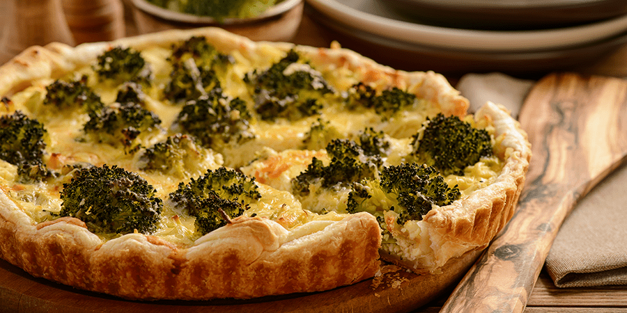
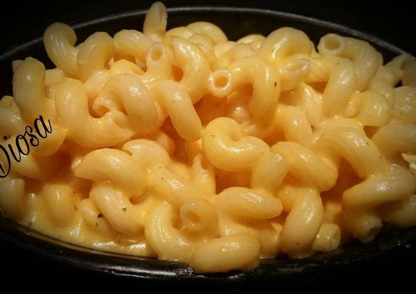

Bienvenido a tu espacio para recetas veganas fáciles, nutritivas y deliciosas. Descubre ideas creativas para cada ocasión, usando ingredientes naturales y accesibles. Ideal para veganos, curiosos o quienes buscan opciones saludables. ¡Disfruta del sabor sin comprometer el bienestar animal ni el planeta!
1. PASTA CARBONARA VEGANA
Ingredientes:
400 g de tofu ahumado,
1 diente de ajo,
200 g de guisantes,
300 g de pasta,
aceite de oliva, sal y pimienta al gusto.
Preparación:
Sofríe el ajo en aceite, añade el tofu cortado y los guisantes. Cocina la pasta y mezcla todo junto con un poco del agua de la cocción para crear una salsa cremosa.
2. SOPA RAMEN CON TOFU CRUJIENTE
Ingredientes:
400 g de tofu,
50 ml de salsa de soja,
fideos ramen y
verduras al gusto (como espinacas y cebolla verde).
Preparación:
Cocina el tofu hasta que esté dorado. Hierve los fideos y las verduras en caldo, luego añade el tofu y la salsa de soja antes de servir.
3. CURRY DE CALABAZA INDIO
Ingredientes:
500 g de calabaza,
200 ml de leche de coco y
especias (cúrcuma, comino, etc.).
Preparación:
Sofríe la calabaza en trozos con las especias, añade la leche de coco y cocina a fuego lento hasta que la calabaza esté tierna.
4. LASAÑA DE CALABACÍN
Ingredientes:
2 calabacines
400 g de champiñones y
salsa vegana bechamel (hecha con leche vegetal y harina).
Preparación:
Corta los calabacines en láminas finas, alterna capas con los champiñones y la salsa bechamel en una fuente para hornear. Hornea hasta que esté dorado.
5. QUICHE DE BRÉCOL Y MOSTAZA

Ingredientes:
250 g de harina,
150 g de tofu,
brécol cocido, puerro y zanahorias.
Preparación:
Prepara la masa mezclando harina y margarina, luego rellena con una mezcla del brécol, tofu y verduras. Hornea hasta que esté firme.
6. ESPAGUETIS CON BOLOÑESA VEGANA
Ingredientes:
400 g de espaguetis,
150 g de lentejas cocidas,
tomates, zanahorias y cebolla.
Preparación:
Sofríe las verduras picadas, añade las lentejas y tomates triturados. Cocina a fuego lento y sirve sobre los espaguetis cocidos.
7. BERENJENAS RELLENAS
Ingredientes:
4 berenjenas,
cebolla, ajo, zanahoria, tomate triturado y
carne picada vegetal (tofu o seitán).
Preparación:
Asa las berenjenas por la mitad, mezcla el resto de ingredientes y rellena las berenjenas antes de hornear.
8. FIDEOS DE ARROZ CON TOFU
Ingredientes:
Fideos de arroz,
tofu firme,
pimiento rojo y jengibre.
Preparación:
Saltea el tofu hasta dorar, añade los fideos cocidos y pimientos junto con salsa de soja. Mezcla bien antes de servir.
9. ENSALADA DE QUINOA CON CALABAZA ASADA
Ingredientes:
200 g de quinoa,
calabaza asada, cebolla morada y granada.
Preparación:
Cocina la quinoa y mezcla con la calabaza asada y cebolla morada. Añade granos de granada antes de servir.
10. MACARRONES CON QUESO VEGANO

Ingredientes:
300 g de macarrones,
leche vegetal, levadura nutricional y anacardos.
Preparación:
Cocina los macarrones y prepara una salsa mezclando anacardos remojados con leche vegetal y levadura nutricional. Mezcla todo antes de servir.